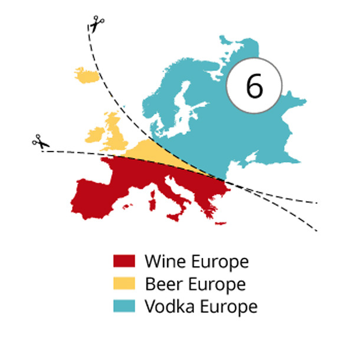
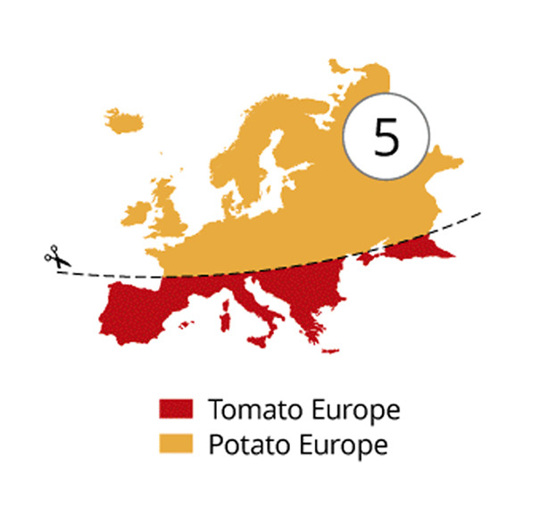
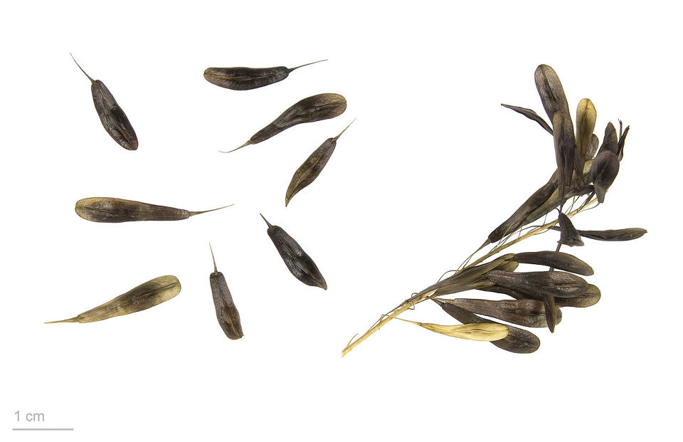
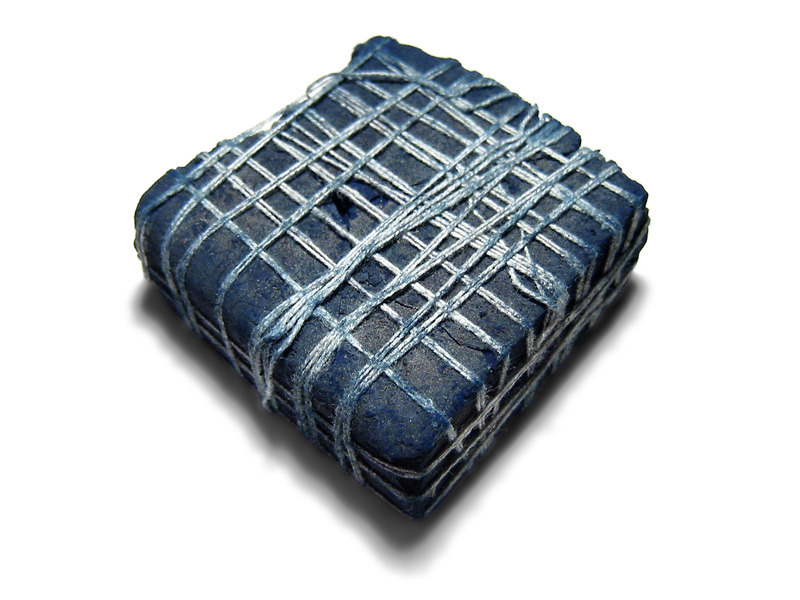
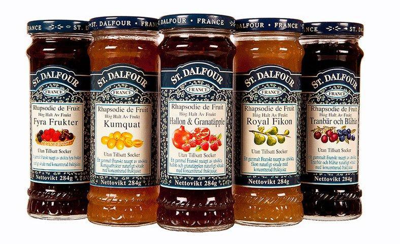
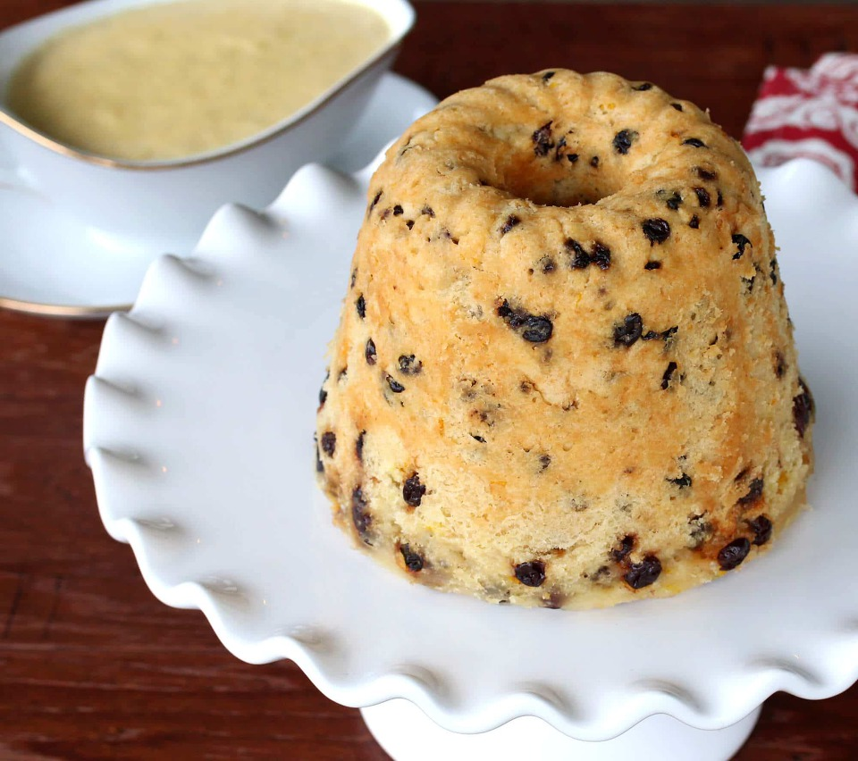
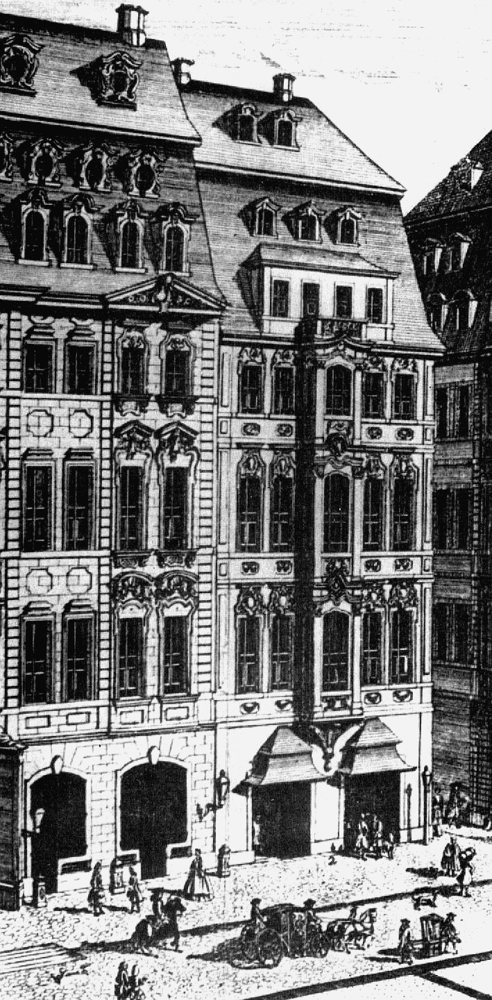
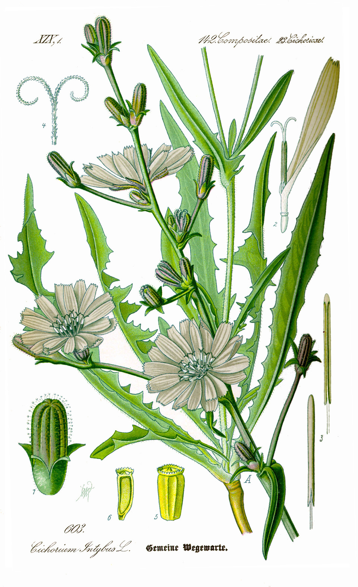
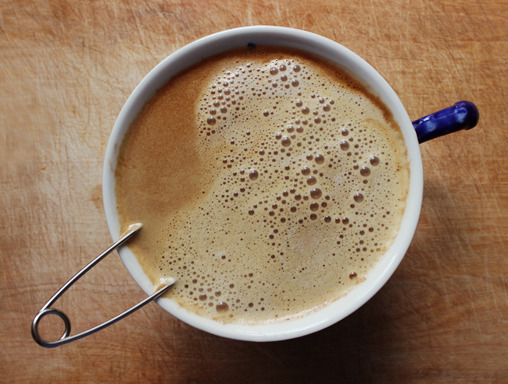
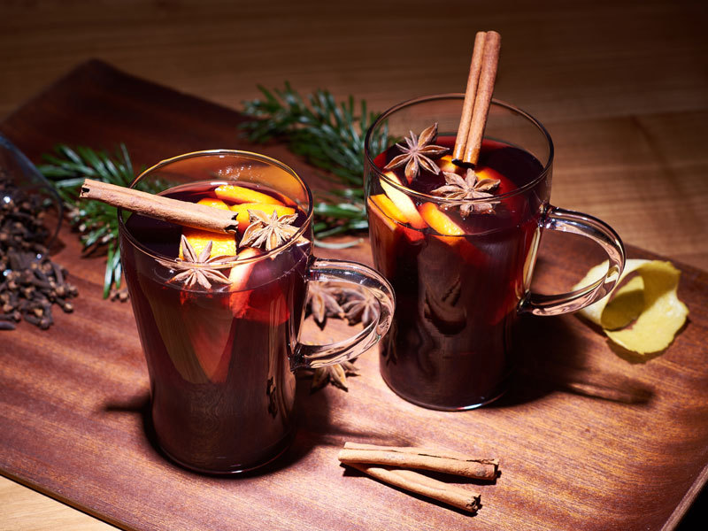

위기의 대륙봉쇄 - 설탕과의 전쟁 (1편)
게시: 2018-05-07T09:16:43+09:00
1810년 이제 합스부르크 가문의 사위가 된 나폴레옹의 권력은 무소불위에 가까운 절정에 달해 있었습니다. 그러나 그를 그 자리에 올려놓기 위해 도나우 강변에서 피를 쏟으며 싸운 병사들 중 상당수는 여전히 프랑스로 돌아오지 못하고 엘베(Elbe) 강과 베저(Weser) 강 하구 북유럽 해안에 분산 배치되어야 했습니다. 아직도 끝나지 않은 영국과의 무역 전쟁인 대륙봉쇄령의 엄격한 집행을 위해 북부 독일의 항구 도시들을 감시하에 둔 것입니다. 그런데 왜 하필 북부 독일 해안에 이런 감시를 집중했을까요 ?
이는 북부 유럽과 남부 유럽의 문화적 차이 때문이었습니다. 인간은 어디까지나 농업에 의존해야 하는 동물이기 때문에 그 삶과 문화는 농작물에 의존할 수 밖에 없습니다. 그래서 북부 프랑스 사람들의 생활 문화는 지중해 연안 남부 프랑스 사람들의 것보다는 독일 사람들의 것과 더 유사하다고 할 수 있습니다. 가장 대표적인 것이 기름입니다. 남부 프랑스가 스페인이나 이탈리아, 그리스처럼 올리브유를 많이 쓰는 것에 비해 북부 프랑스는 독일이나 영국처럼 버터를 많이 쓰지요.



(최근 boredpanda.com이라는 사이트에서 게재했던 유럽의 분류 지도입니다. 이런 분류의 가장 큰 영향은 위도의 높낮이와 그에 따른 일조량의 차이입니다. 그런 것을 보면 국민성이니 민족의 우수함이니 하는 것들은 모두 미미한 인간들의 개소리일 뿐이고, 우리 모두 거대한 우주 속에서 그저 바람 따라 흩날릴 뿐인 먼지에 불과하다는 것을 알 수 있습니다.)
유럽 남부는 불만투성이 속에서도 그런대로 나폴레옹의 대륙봉쇄령에 적응하며 살아갈 수 있었습니다. 가령 미국에서 수입하던 목화솜은 아마(flax)와 나폴리산 목화솜으로 대체가 가능했습니다. 인도에서 들여오던 고급진 파란색 인디고(indigo) 염료는 좀 촌스럽지만 유럽 자생의 대청(woad)으로도 흉내를 낼 수 있었습니다. 심지어 커피도 볶아서 가루를 낸 치커리(chicory) 뿌리로 최소한 맛과 향을 어느 정도 비슷하게 만들 수 있었습니다. 설탕은 좀 문제였습니다. 햇빛이 잘 내리쬐는 남부 유럽에서는 포도즙을 졸여 만든 시럽으로 설탕을 대체했습니다. 실제로 설탕을 넣지 않은 과일잼으로 인기가 있는 생달푸르(St Dalfour) 잼만 해도, 설탕 대신 포도즙과 대추야자즙을 사용한다고 하지요. 그러나 달다고 해서 다 설탕의 대체재가 될 수 없었습니다. 설탕의 그 아무 향 없는 순수한 단맛은 특히 커피와 홍차, 코코아 등 마실 것에 있어 대체 불가였습니다.

(대청이라고 불리는 woad 잎입니다. 이걸 가공하면 푸른색의 염료를 얻을 수 있었습니다. 물론 인디고의 그 눈부신 새파란 색깔과는 비교가 어려웠다고 합니다.)

(인도 원산지의 콩과 식물의 잎을 원료로 하여 만드는 가공된 인디고 염료 덩어리입니다. 당시 영국의 인도 무역선들 즉 indiaman들이 실어오는 주요 귀중품 중 하나가 바로 이 인디고였습니다.)

(코스트코에서 싸게 살 수 있는 생-달푸르 잼입니다. '설탕이 들지 않은 좋은 잼'이라는 것이 특장점 중의 하나인데, 솔직히 맛은 뭐 그저 그렇습니다. 또 설탕 대신 포도 시럽을 쓴다고 건강에 더 좋은 것인지도 그닥...)
그나마 남부 유럽에서는 어렵게나마 이런 식으로 대체재를 구할 수 있었으나, 북부 유럽에서는 그마저도 구하는 것이 쉽지 않았습니다. 불만족스러운 대체재의 가격마저 비쌌던 발트해 연안의 북유럽 지역에서는 영국과의 밀무역을 할 수 밖에 없었습니다. 나폴레옹의 친인척인 네덜란드 왕 루이나 베스트팔렌 왕 제롬은 형 나폴레옹으로부터 밀무역 단속을 전쟁처럼 삼엄하게 할 것을 요구받았습니다. 그러나 아무래도 그 나라에서 그 나라 사람인 부하들과 자주 접촉하여 그들의 어려움을 잘 알고 있던 동생들은 형의 엄명에도 불구하고 백성들의 밀무역을 은연 중에 눈감아줄 수 밖에 없었습니다. 이런 식으로, 영국에 대한 나폴레옹의 무역 전쟁은 조금씩 패배로 뒷걸음치고 있었습니다.
그 중에서도 설탕은 무역 액수에 있어서나 상징적인 면에 있어서나 매우 중요했습니다. 사람은 어디까지나 동물에 불과하므로 아무리 돈이 많아도 또 아무리 학식이 많아도 결국 맛있는 것을 먹고자 하는 욕망에서 자유롭지 못합니다. 그런데 18세기 말 19세기 초반의 유럽은 이미 설탕 없는 삶을 상상하기 어려운 지경이었습니다. 이건 특히 영국에서 심했습니다. 영국은 홍차 문화가 발달한 나라였거든요.
17세기 중반에 중국에서 녹차 형태로 맨 처음 차가 들어왔을 때는 차에 설탕을 넣지 않았습니다. 그러나 불과 수십년이 흐르는 사이 어느덧 홍차에는 설탕이 들어가게 되었습니다. 누가 어떤 사건을 통해 홍차에 설탕을 넣게 되었는지에 대해서는 주도적인 설이 없습니다. 일부 설에 따르면 그건 영국 선원들 영향이라고 합니다. 즉, 인도에서는 설탕 종주국답게 홍차에 설탕을 넣어서 마셨는데, 영국 선원들이 그런 습관을 배워서 영국으로 가져왔다는 것이지요. 그러나 영국 선원들이 럼주나 진, 맥주 등을 두고 과연 홍차 같은 것을 마셨을지에 대해서는 많은 의심이 남습니다. 확실한 것은 17세기 말엽에는 이미 유럽 대부분에서는 홍차에 설탕을 넣고 있었다는 점입니다.
홍차 뿐만 아니었습니다. 17세기부터 중산층 이상의 영국인들의 식생활에서 설탕은 뺄 수 없는 요소가 되어 있었습니다. 가령 1603년 영국을 방문한 스페인 파견단 일행이 영국인들이 후식 뿐만 아니라 메인 코스의 고기 요리에도, 심지어 와인에도 설탕을 듬뿍 쓰는 것을 보고 크게 놀라워 했다는 기록이 있습니다. 하지만 이 기록은 다른 뜻으로 해석될 수도 있습니다. 스페인이나 프랑스 등 유럽 대륙에서는 설탕을 그렇게까지 많이 소비하지는 않았다는 것이지요.

(점박이개 즉 spotted dog 또는 spotted dick이라고 불린 푸딩입니다. 삶아서 만드는 푸딩이라 오븐을 쓰기 어려운 군함에서 특히 즐겨 만들어 먹던 영국 해군의 디저트라고 할 수 있습니다.)
하지만 설탕을 잘 먹지 않던 스페인인들이나 프랑스인들도 설탕을 대량으로 써야만 했습니다. 바로 후식과 커피 때문이었습니다. 17세기에 들어서면서 설탕 값은 1파운드에 약 6펜스 정도로 싸졌습니다. 이는 현재가치로 약 6000원 정도로서, 당시 우표값 수준이었습니다. 물론 지금의 파운드당 약 1200원 정도에 비해서는 크게 비싼 것이지만 중세 시대에 비해서는 엄청나게 싸진 것이었습니다. 중세 시절에는 파이 껍질에 덜덜 떨면서 아껴가며 뿌리던 것을 이젠 아예 파이 껍질을 반죽할 때 듬뿍 넣을 수 있게 된 것이지요. 17세기 들어서면 빈곤층이 아닌 이상 하루 식사 중 최소한 한번은 푸딩이든 파이든 타르트든 이름이 무엇이건 간에 후식이 식탁에 올라와야 했습니다. 달콤한 후식이 없는 식사는 당연히 실망스러운 것이었지만, 다른 오락거리가 별로 없어 손님을 초대한 식사를 자주 즐기던 중산층에 있어서는 무엇보다도 체면이 상하는 일이었습니다.

(바흐의 커피 칸타타가 초연된 짐머만 커피하우스입니다. 라이프치히에 있었는데, 1943년 연합군의 대공습 때 파괴되었습니다.)
게다가 커피가 있었습니다. 1735년 짐머만 커피하우스(Zimmermannsches Kaffeehaus)에서 초연된 바흐(Johann Sebastian Bach)의 커피 칸타타(독일어 원제는 Schweigt stille, plaudert nicht 조용, 떠들지 마셈 이라고 합니다)에서도 아버지 쉴렌드리언(Schlendrian)이 딸 리쉔(Lieschen)의 커피 중독을 한탄했듯이, 이미 유럽은 커피 없이는 살 수 없는 상태였습니다. 당시 유럽에서 소비되던 커피는 설탕과 마찬가지로 주로 카리브해에서 노예 노동에 의해 생산된 것이 대부분이었습니다. 그런 주요 유통 경로가 영국 해군에 의해 끊긴 뒤에도, 처음 유럽에 소개될 때처럼 이집트와 오스만 투르크를 통해 들어오던 북아프리카산 커피가 여전히 유통되었습니다. 그런 진짜 커피를 마실 형편이 안 되는 서민층에서는 치커리 뿌리라도 볶아 우려냈고, 그마저도 구할 형편이 안되는 집에서는 빵가루를 시커멓게 태운 뒤 가루를 내어 우려낸 것을 커피 대신 마셨습니다. 그런 어이없는 대용 커피라도 꼭 마시고 싶었을까라고 생각하시겠지만, 그렇게 태운 곡식을 물에 우려내어 마시는 습관은 우리나라에도 있습니다. 숭늉이나 보리차가 다 그런 것이지요. 더 심각한 문제는 그런 대용 커피에도 설탕은 넣었다는 것입니다.

(치커리 식물의 모양새입니다.)

(치커리 뿌리로 만든 대용 커피입니다. 이때 뿐만 아니라 미국의 남북 전쟁 당시나 제1, 2차 세계대전 등 전쟁 때마다 치커리 뿌리로 만든 대용 커피는 군인들과 민간인들 모두로부터 사랑(?)받았습니다. )
당시 커피와 설탕은 비싼 수입품으로서 중산층 이상의 사람들만 먹을 수 있는 것이었을텐데, 과연 서민층까지 그렇게 커피와 설탕에 중독된 상태였을까요 ? 예, 그랬습니다. 1663년 독일 여행가 소머펠트(Gustav Sommerfeldt)가 남긴 기록을 보면 '오스트리아를 침공했다가 포로로 잡혀 남게 된 투르크인들이 커피와 설탕으로 음료를 만들어 팔아 돈을 벌고 있더라'는 소식을 신기하다는 듯이 남겼는데, 그로부터 불과 130년 정도 지난 사이에 유럽은 이미 커피와 설탕에 중독된 상태였습니다.
1798년 나폴레옹이 이집트 알렉산드리아에 상륙한 뒤 나일강을 따라 카이로를 향해 행군할 때, 프랑스 병사들이 배를 곪지는 않았습니다. 풍요로운 곡창지대인 나일강변 곳곳에는 밀과 콩, 양파가 잔뜩 쌓여 있었으니까요. 그러나 대군에게 빵을 먹이기에는 밀가루를 낼 맷돌이 부족했던 상황이라, 병사들은 빵을 먹지 못하고 삶은 콩만 질리도록 먹어야 했습니다. 병사들의 불만이 쌓여가자, 나폴레옹은 '카이로에만 가면 너희들이 꿈꾸던 모든 빵을 다 얻을 수 있다' 라고 연설을 했습니다. 그러나 '고작 빵을 찾아온 거라면 뭐하러 프랑스에서 이집트까지 온 거냐'라고 병사들이 비아냥거리자, 다음번 연설에서는 '카이로에만 가면 고기와 와인, 설탕과 커피를 마음껏 먹을 수 있다'라고 메뉴를 바꾸었다고 합니다. 실제로 당시 이집트는 홍해 쪽에서 수입된 모카 커피를 지중해 쪽으로 유통하는 주요 경로로서, 이집트의 수입원 중 큰 비중을 차지하는 것이 그 관세였거든요. 저 나폴레옹의 연설이 뜻하는 바는 최소한 일반 사병들조차 커피를 알고 있었고, 또 커피에는 설탕을 넣는 것이 당연한 것이었다는 점입니다.
나폴레옹의 병사들이 설탕을 꽤 자주 먹었다는 기록은 다른 곳에서도 나옵니다. 1806년 프로이센과 예나(Jena) 전투를 벌이기 직전, 프랑스군은 인근 창고에서 구한 많은 양의 설탕과 와인으로 10월 중순의 쌀쌀한 밤에 달콤한 뱅쇼(vin chaud)를 끓여 마셨습니다. 또 몇 년전 리투아니아의 수도 빌니우스 근처에서 1812년 러시아 원정 당시 희생된 프랑스 병사들의 집단 매장지가 발굴되었습니다. 치과 의사들이 거기서 발굴된에서 유골의 치아를 검사해보니, 일부 병사들의 치아는 당시 평균 이상으로 충치가 많이 발견되었다고 합니다. 아마도 고달픈 야전 생활 중에도 생각보다는 자주 설탕을 먹을 수 있었던 것이 아닌가 생각하게 만드는 사실이지요.

(와인에 오렌지 등의 과일 조각과 설탕, 향료 등을 넣고 가볍게 덥힌 뱅쇼 vin chaud 입니다. 글자 그대로 따뜻한 와인이지요. 물론 나폴레옹의 병사들은 저렇게 계피 스틱까지 꽂은 예쁜 잔으로 뱅쇼를 마시지는 못했을 것입니다.)
결국 유럽인들은 설탕 없이는 견디기 어려웠습니다. 시장의 수요가 있는 곳에는 반드시 공급이 있기 마련이었고, 그 대금은 나폴레옹에겐 피와 같았던 금화와 은화의 형태로 고스란히 가증스러운 영국으로 흘러들어갔습니다. 이건 요즘 현대 미국이 그 막강한 군사력과 경찰력을 가지고도 중남미산 마약과의 싸움에서 조금씩 계속 패배하는 것과 유사했습니다.
이렇게 중요한 설탕에 대해서, 나폴레옹은 뭔가를 해야 했습니다. 이대로 놔두면 영국과의 전쟁은 필패가 뻔했습니다. 그리고 이 전쟁은 총검이나 대포로 싸울 수 있는 것이 아니었습니다. 카리브해의 사탕수수를 어떻게든 유럽 내에서 길러내지 못하는 한 나폴레옹에게는 승산이 없었습니다. 그러나 아무리 나폴레옹이 불굴의 의지를 가진 천재라고 해도 프랑스에서 사탕수수를 키워낼 방법은 없습니다. 하지만 늘 그랬듯이, 인간은 뭔가 방법을 찾아냅니다. 이번에도 예외는 아니었습니다.
To be continued
Source : Sugar: A Bittersweet History By Elizabeth Abbott
The Life of Napoleon Bonaparte By William Milligan Sloane
https://fr.wikipedia.org/wiki/Caf%C3%A9#/media/File:Cafeine_consommation.png
https://en.wikipedia.org/wiki/History_of_coffee
https://fr.wikipedia.org/wiki/Caf%C3%A9
https://en.wikipedia.org/wiki/Jerzy_Franciszek_Kulczycki
https://en.wikipedia.org/wiki/Liebig%27s_Extract_of_Meat_Company
https://en.wikipedia.org/wiki/Franz_Karl_Achard
https://www.boredpanda.com/maps-atlas-of-prejudice-yanko-tsvetkov/
https://yumuniverse.com/meet-roasted-chicory-root-a-health-boosting-caffeine-free-coffee-alternative/
https://en.wikipedia.org/wiki/Chicory
https://en.wikipedia.org/wiki/Isatis_tinctoria
https://www.stdalfour.com.au/products/fruit-spreads